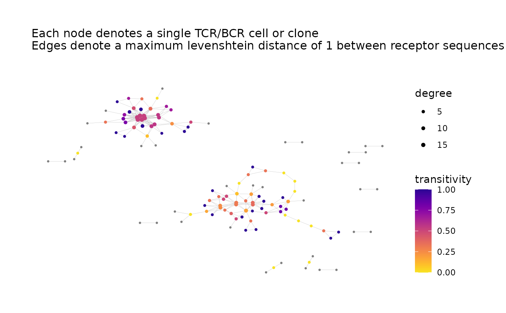

Network Analysis of Immune Repertoire
buildRepSeqNetwork.RdGiven Adaptive Immune Receptor Repertoire Sequencing (AIRR-Seq) data, builds the network graph for the immune repertoire based on sequence similarity, computes specified network properties and generates customized visualizations.
Usage
buildRepSeqNetwork(
## Input ##
data,
seq_col,
count_col = NULL,
subset_cols = NULL,
min_seq_length = 3,
drop_matches = NULL,
## Network ##
dist_type = "hamming",
dist_cutoff = 1,
drop_isolated_nodes = TRUE,
node_stats = FALSE,
stats_to_include = chooseNodeStats(),
cluster_stats = FALSE,
cluster_fun = cluster_fast_greedy,
## Visualization ##
plots = TRUE,
print_plots = TRUE,
plot_title = "auto",
plot_subtitle = "auto",
color_nodes_by = "auto",
...,
## Output ##
output_dir = getwd(),
output_type = "individual",
output_name = "MyRepSeqNetwork",
pdf_width = 12,
pdf_height = 10
)Arguments
- data
A data frame containing the AIRR-Seq data, with variables indexed by column and observations (e.g., clones or cells) indexed by row.
- seq_col
Specifies the column of
datacontaining the receptor sequences to be used as the basis of similarity between rows. Accepts either the column name or column index. Alternatively, a vector of length 2 specifying two columns with distinct sequences (e.g., alpha chain and beta chain), in which case similarity between rows depends on both types of sequences being similar (e.g., similar alpha chain sequences and similar beta chain sequences).- count_col
Optional. Specifies the column of
datacontaining a measure of abundance, e.g., clone count or unique molecular identifier (UMI) count. Accepts either the column name or column index. Passed togetClusterStats; only relevant ifcluster_stats = TRUE.- subset_cols
Specifies which columns of the AIRR-Seq data are included in the output. Accepts a vector of column names or a vector of column indices. The default
NULLincludes all columns. The receptor sequence column is always included regardless of this argument's value. Passed tofilterInputData.- min_seq_length
A numeric scalar, or
NULL. Observations whose receptor sequences have fewer thanmin_seq_lengthcharacters are removed prior to network analysis.- drop_matches
Optional. Passed to
filterInputData. Accepts a regular expression (seeregex). Checks receptor sequences for a pattern match usinggrep. Those returning a match are removed prior to network analysis.- dist_type
Specifies the function used to quantify the similarity between sequences. The similarity between two sequences determines the pairwise distance between their respective nodes in the network graph, with greater similarity corresponding to shorter distance. Valid options are
"hamming"(the default), which useshamDistBounded, and"levenshtein", which useslevDistBounded. An additional option"euclidean_on_atchley"exists for TCR CDR3 amino acid sequences (seeadjacencyMatAtchleyFromSeqs).- dist_cutoff
A nonnegative scalar. Specifies the maximum pairwise distance (based on
dist_type) for an edge connection to exist between two nodes. Pairs of nodes whose distance is less than or equal to this value will be joined by an edge connection in the network graph. Controls the stringency of the network construction and affects the number and density of edges in the network. A lower cutoff value requires greater similarity between sequences in order for their respective nodes to be joined by an edge connection. A value of0requires two sequences to be identical in order for their nodes to be joined by an edge.- drop_isolated_nodes
A logical scalar. When
TRUE, removes each node that is not joined by an edge connection to any other node in the network graph.- node_stats
A logical scalar. Specifies whether node-level network properties are computed.
- stats_to_include
A named logical vector returned by
chooseNodeStatsorexclusiveNodeStats. Specifies the node-level network properties to compute. Also accepts the values"all"and"cluster_id_only". Only relevant ifnode_stats = TRUE.- cluster_stats
A logical scalar. Specifies whether to compute cluster-level network properties.
- cluster_fun
Passed to
addClusterMembership. Specifies the clustering algorithm used when cluster analysis is performed. Cluster analysis is performed whencluster_stats = TRUEor whennode_stats = TRUEwith thecluster_idproperty enabled via thestats_to_includeargument.- plots
A logical scalar. Specifies whether to generate plots of the network graph.
- print_plots
A logical scalar. If
plots = TRUE, specifies whether the plots should be printed to the R plotting window.- plot_title
A character string or
NULL. Ifplots = TRUE, this is the title used for each plot. The default value"auto"generates the title based on the value of theoutput_nameargument.- plot_subtitle
A character string or
NULL. Ifplots = TRUE, this is the subtitle used for each plot. The default value"auto"generates a subtitle based on the values of thedist_typeanddist_cutoffarguments.- color_nodes_by
Optional. Specifies a variable to be used as metadata for coloring the nodes in the network graph plot. Accepts a character string. This can be a column name of
dataor (ifnode_stats = TRUE) the name of a computed node-level network property (based onstats_to_include). Also accepts a character vector specifying multiple variables, in which case one plot will be generated for each variable. The default value"auto"attempts to use one of several potential variables to color the nodes, depending on what is available.- ...
Other arguments to
generateNetworkGraphPlots.- output_dir
A file path specifying the directory for saving the output. The directory will be created if it does not exist. If
NULL, output will be returned but not saved.- output_type
A character string specifying the file format to use when saving the output. The default value
"individual"saves each element of the returned list as an individual uncompressed file, with data frames saved in csv format. For better compression, the values"rda"and"rds"save the returned list as a single file using the rda and rds format, respectively (in the former case, the list will be namednetwithin the rda file). Regardless of the argument value, any plots generated will saved to a pdf file containing one plot per page.- output_name
A character string. All files saved will have file names beginning with this value.
- pdf_width
Sets the width of each plot when writing to pdf. Passed to
saveNetwork.- pdf_height
Sets the height of each plot when writing to pdf. Passed to
saveNetwork.
Details
To construct the immune repertoire network, each TCR/BCR clone (bulk data) or cell (single-cell data) is modeled as a node in the network graph, corresponding to a single row of the AIRR-Seq data. For each node, the corresponding receptor sequence is considered. Both nucleotide and amino acid sequences are supported for this purpose. The receptor sequence is used as the basis of similarity and distance between nodes in the network.
Similarity between sequences is measured using either the Hamming distance or Levenshtein (edit) distance. The similarity determines the pairwise distance between nodes in the network graph. The more similar two sequences are, the shorter the distance between their respective nodes. Two nodes in the graph are joined by an edge if the distance between them is sufficiently small, i.e., if their receptor sequences are sufficiently similar.
See the buildRepSeqNetwork package vignette for more details. The vignette can be accessed offline using vignette("buildRepSeqNetwork").
Value
If the constructed network contains no nodes, the function will return NULL with a warning. Otherwise, the function invisibly returns a list containing the following items:
- igraph
An object of class
igraphcontaining the list of nodes and edges for the network graph.- adjacency_matrix
The network graph adjacency matrix, stored as a sparse matrix of class
dgCMatrixfrom theMatrixpackage. SeedgCMatrix-class.- node_data
A data frame containing containing metadata for the network nodes, where each row corresponds to a node in the network graph. This data frame contains all variables from
data(unless otherwise specified viasubset_cols) in addition to the computed node-level network properties ifnode_stats = TRUE. Each row's name is the name of the corresponding row fromdata.- cluster_data
A data frame containing network properties for the clusters, where each row corresponds to a cluster in the network graph. Only included if
cluster_stats = TRUE.- plots
A list containing each plot generated for the network graph. Each plot is an object of class
ggraph. Only included ifplots = TRUE.
References
Hai Yang, Jason Cham, Brian Neal, Zenghua Fan, Tao He and Li Zhang. (2023). NAIR: Network Analysis of Immune Repertoire. Frontiers in Immunology, vol. 14. doi: 10.3389/fimmu.2023.1181825
Author
Brian Neal (Brian.Neal@ucsf.edu)
Examples
toy_data <- simulateToyData()
network <- buildRepSeqNetwork(
toy_data, seq_col = "CloneSeq",
node_stats = TRUE, cluster_stats = TRUE,
color_nodes_by = "transitivity", color_scheme = "plasma-1",
size_nodes_by = "degree", node_size_limits = c(0.5, 1.5),
output_dir = NULL)
#> Input data contains 200 rows.
#> Removing sequences with length fewer than 3 characters... Done. 200 rows remaining.
#> Computing network edges based on a max hamming distance of 1... Done.
#> Network contains 122 nodes (after removing isolated nodes).
#> Computing node-level network statistics... Done.
#> Computing cluster membership within the network... Done.
#> Computing statistics for the 20 clusters in the network... Done.
#> Generating graph plot with nodes colored by transitivity...

#> Done.